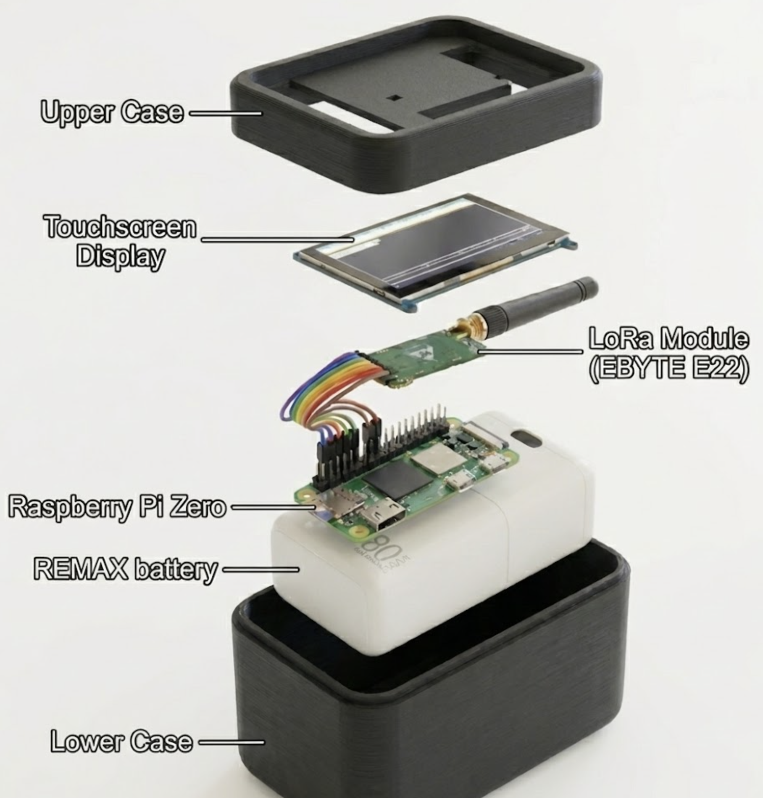

The permanent, solar-autonomous backbone of the mesh network. Engineered for indefinite operation in zero-infrastructure environments.

// FIG 1.0: MODULAR INTERNAL ARCHITECTURE
Key subsystems powering the independent mesh.
Detailed metrics for system integrators.
| RF Protocol | LoRaWAN L2 (Modified Mesh) |
| Frequency Bands | US915, EU868, AS923 |
| Tx Power | Regional Limit (Hardware Max: +22 dBm) |
| Rx Sensitivity | -148 dBm |
| Processor | Broadcom BCM2711, Quad-core Cortex-A72 |
| Memory | 2GB LPDDR4-3200 SDRAM |
| Storage | 32GB Industrial eMMC |
| Local Connectivity | Wi-Fi 5 (802.11ac), Bluetooth 5.0 |
Operational limits and autonomy.
| Battery Capacity | 80 Ah (256 Wh) @ 3.2V |
| Solar Input | 12-24V DC MPPT Controller (Max 60W) |
| Autonomy (No Sun) | ~6 Months (Deep Sleep Beacon Mode) |
| Operating Temp | -30°C to +65°C (-22°F to 149°F) |
| Dimensions | 280mm x 180mm x 90mm (Approx.) |
| Weight | 3.5 kg (7.7 lbs) |
Standard IoT devices are designed for predictable solar cycles. We design for worst-case scenarios. Following a major event, ash or heavy cloud cover can reduce solar efficiency to near zero for weeks.
The Aegis Node's battery reservoir ensures the network backbone remains active and beaconing for half a year without recharge. This ensures a viable signal is available immediately after a disaster, not just when the weather clears.